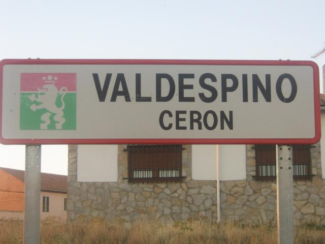

Valdespino Cerón es una pequeña localidad situada en la comarca de los Oteros, en la provincia de León, Castilla y León, España. Este pueblo es conocido por su entorno rural y su tranquilidad, característico de esta zona agrícola.
Historia Valdespino Cerón tiene una rica historia vinculada a la agricultura y a la vida rural. A lo largo de los años, ha mantenido su esencia tradicional, con una arquitectura que refleja la historia local y el estilo de vida de sus habitantes.
Economía La economía del pueblo se basa principalmente en la agricultura, destacando los cultivos de cereales y la viticultura. La producción de vino es un aspecto importante de la economía local, ya que la comarca de los Oteros es conocida por sus vinos de calidad.
Cultura y Tradiciones El pueblo celebra diversas festividades que reflejan sus tradiciones y la vida comunitaria. Estas fiestas suelen incluir actividades religiosas y eventos culturales, donde los vecinos se reúnen para disfrutar de la música, la gastronomía y las costumbres locales.
Naturaleza El entorno natural de Valdespino Cerón ofrece paisajes rurales y tranquilidad. La zona de los Oteros es conocida por sus suaves colinas y campos extensos, lo que proporciona un ambiente ideal para disfrutar de actividades al aire libre, como senderismo y paseos en bicicleta.
Conclusión Valdespino Cerón es un ejemplo de la vida rural en la provincia de León, donde las tradiciones y el entorno natural se entrelazan. Es un lugar que invita a los visitantes a descubrir un estilo de vida auténtico y disfrutar de la paz del campo.
|
Valdespino Cerón 24207 León |